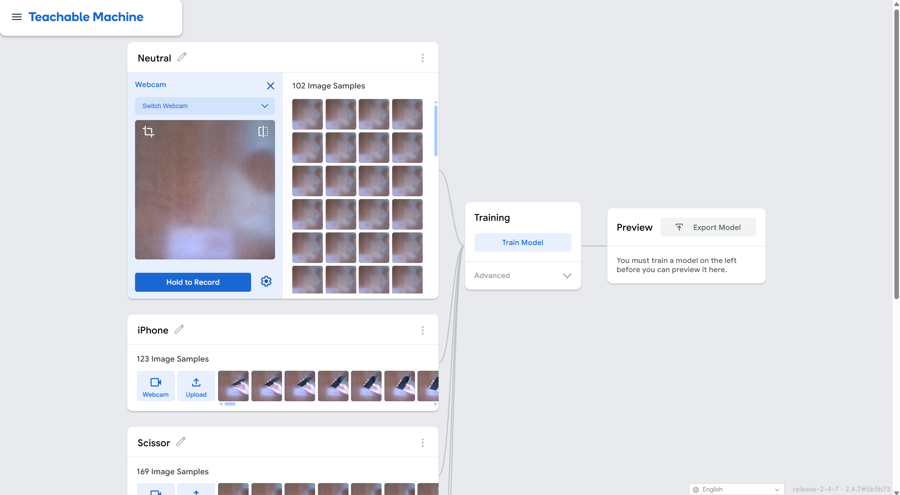
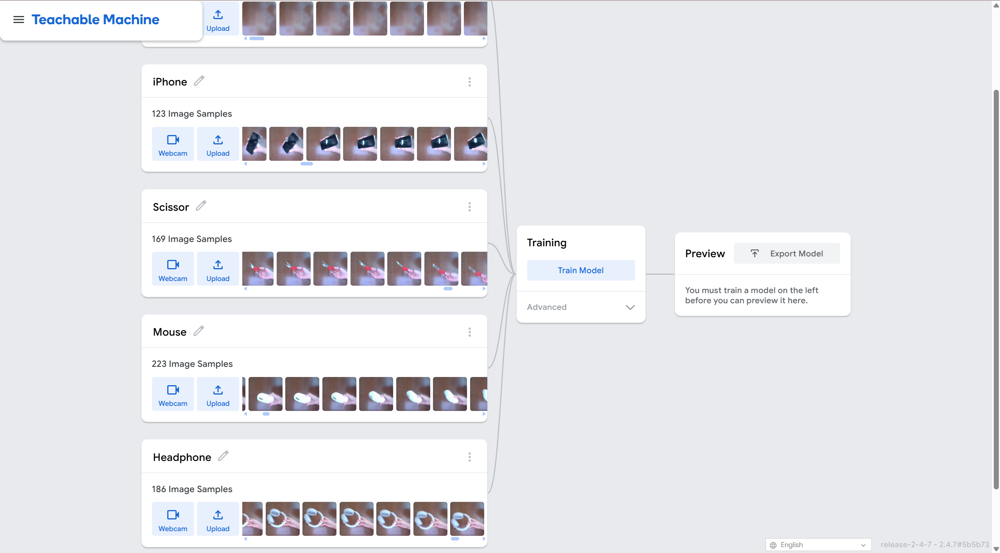
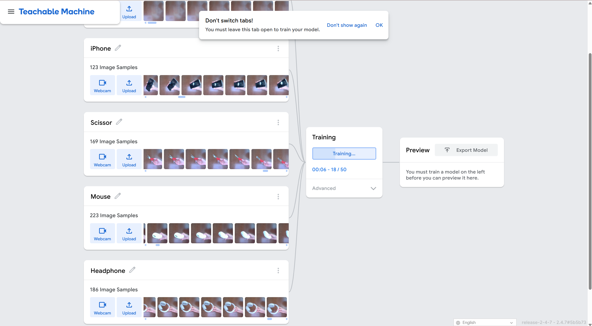
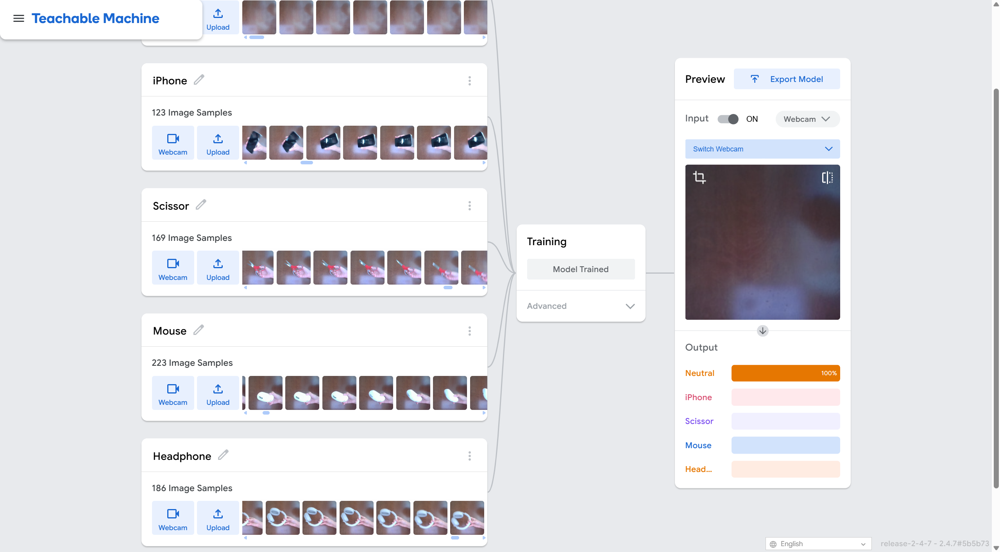
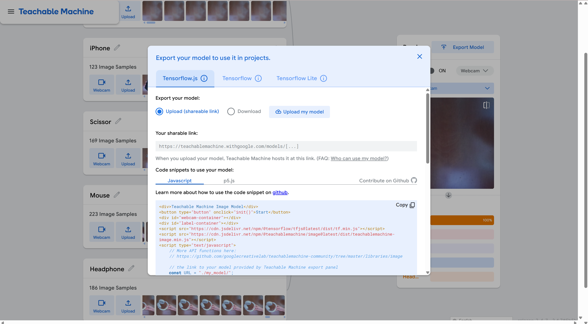

Our project takes the lessons learned from the book “Unmasking AI” by Joy Buolamwini and applies it to teaching a machine. We use an online tool called Teachable Machine 2.0, that trains a computer to recognize images, sounds, poses, etc. We plan to explore these ideas by creating a machine learning model using Teachable Machine 2.0 to train a model to recognize everyday objects, such as an iPhone, a pair of scissors, a computer mouse, and a pair of headphones. Through this hands-on approach, we aim to better understand how machine learning models are trained and the importance of diverse, balanced datasets in achieving accurate predictions.
For us, this reality of AI is a wake up call. On one hand, we know that there are biases in the world that we live in, we see it all the time. But on the other hand, these realizations shock us as AI becomes more relevant in our lives. We have tools like ChatGPT, CoPilot, and AI embedded in the apps we use. Even this project shows us how accessible training artificial intelligence is. Knowing this gives us a sense of caution and awareness of the responsibility that AI development carries.
As the readers, we can see the impact that these algorithmic biases have on real people. Buolamwini was able to show us with the testimonies of people who are being affected negatively by this. We see that the Brooklyn tenants have their rent increased and companies that take advantage of them through new AI tools implemented into the building. Imagine all the stories that are not told. How many people have already been victims to algorithmic bias and didn’t have support. It shows the scope of power that AI has. And it is usually those in power who have control over it.
AI systems are becoming increasingly integrated into our daily lives, from personal assistants to advanced decision-making algorithms. While these technologies have immense potential, they also carry significant risks when biases in training data are overlooked. Buolamwini’s work serves as a wake-up call, revealing how biases in AI systems can perpetuate social injustices.
So with this project, we want to find ways where we can use AI to learn. A benefit to a seemingly limitless catalog of knowledge is that there is so much to explore. In order to learn, we have to be curious and have humility. When we know that we don’t have all the answers, we can see how much more we can learn, and we can use AI as a means to get there. We think that this requires a perspective shift. We can’t be overly reliant on AI to solve things for us and we have to make sure that our goals are not affecting people negatively.
Our primary objective is to create a simple yet effective machine learning model and use it as a framework to understand the mechanics of machine learning, investigate how biases in data affect model outcomes, and reflect on the ethical responsibilities associated with AI development.
Classification: Personal Commen Accessories
Range: Four different accessories
Item List: iPhone, Scissor, Mouse, Headphone
Image Samples: around 123 to 223 for each classified item
Gather image samples using Webcam from each angle of the item
Gather image samples for more classes
Train the model with the captured samples from different classes
Training for samples complete
Exported the model with a sharable link for use
A number of image samples were captured using Teachable Machine's Webcam, including a set of samples for 'Neutral,' which represents when there's nothing in the frame but only the background.
While capturing image samples using the Webcam, the item occasionally moves out of the camera's view, leaving mostly the background captured. These background samples need to be manually deleted to reduce bias.
Perhaps because the sample used for the mouse is white, testing with a black mouse occasionally results in it being misclassified as an iPhone, which suggest we might need more varied samples.
Overall, the machine learning model is able to successfully identify all the accessories.
This project allowed us to implement many ideas that we’ve learned in class into practice. We’ve learned not only the design styles and practices from class but the nature inclusion and AI in our world. Through the inequalities that we have seen in the real world or online, we realize that we have our part to play. This project showed us how accessible training models can be and how easily data can be fed. So it gives us a sense of responsibility to do our part in using AI in the right ways.
In relation to the biases and imperfections that Buolamwini depicts, we have seen first hand the false positives that AI brings. One of our biggest issues in our training model is depicting objects based on their color. We used objects such as a white mouse and black iPhone to train our model, and as a result, the model depicted anything black to be an iPhone and white objects became inconclusive. These results remind us of the aspire mirror project, where the white mask was detected but Buolamwini’s face was not. The issue was not within the machine itself, but with what data was being fed into it. The issue, therefore, lies not with the machine itself but with the limitations in the data we chose to provide it.
Perhaps the most important lesson from Unmasking AI is that fairness in AI is not a one-time goal but an ongoing process. Buolamwini emphasizes that addressing bias requires continuous evaluation, iteration, and engagement with diverse perspectives. This means not only refining datasets and models but also considering the broader societal impacts of AI technologies. In our project, this commitment manifested as a willingness to iterate and improve, even as we faced limitations in resources and scope.
Moreover, we reflected on our role as future developers and users of AI. Just as Buolamwini stressed the need for accountability in AI development, we recognized that we must actively question the data sources, training processes, and real-world applications of our models. This is for both our own models and those we interact with in our education and professional lives. Ethical AI can be achieved, and it is up to learn and implement these practices.
During our testing, we encountered a real-world example of how training data affects model outcomes. Perhaps because the sample images used for the mouse were all white, testing the model with a black mouse occasionally resulted in it being misclassified as an iPhone. This finding highlights the importance of using diverse and varied samples when training models to ensure they can generalize well. In our case, this misclassification wasn’t critical, but in a real-world application, similar oversights could lead to significant errors or reinforce harmful biases. This further reinforced the need for vigilance and thoroughness in curating datasets for machine learning. By addressing these issues during the training process, we can take a step toward building fairer and more reliable AI systems.